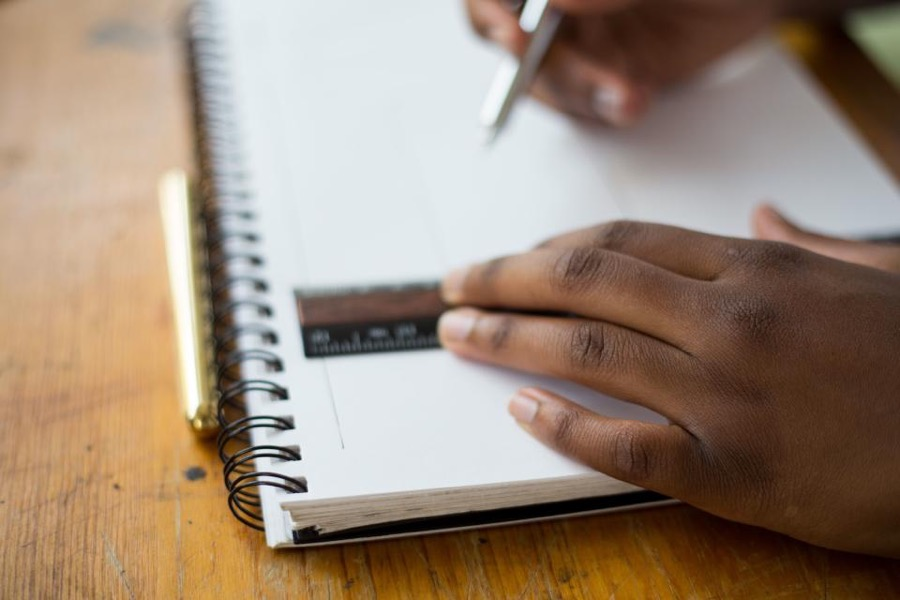
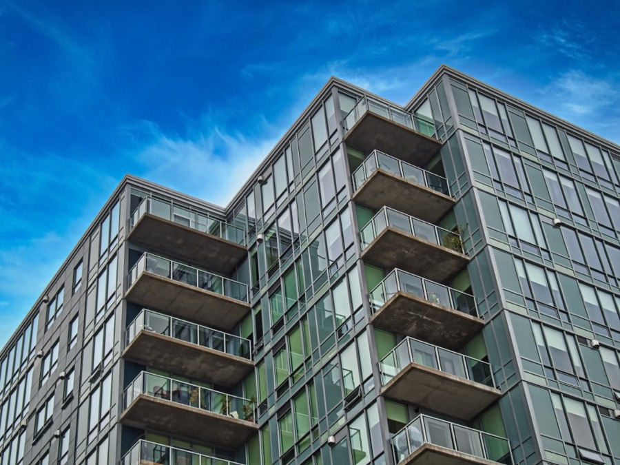
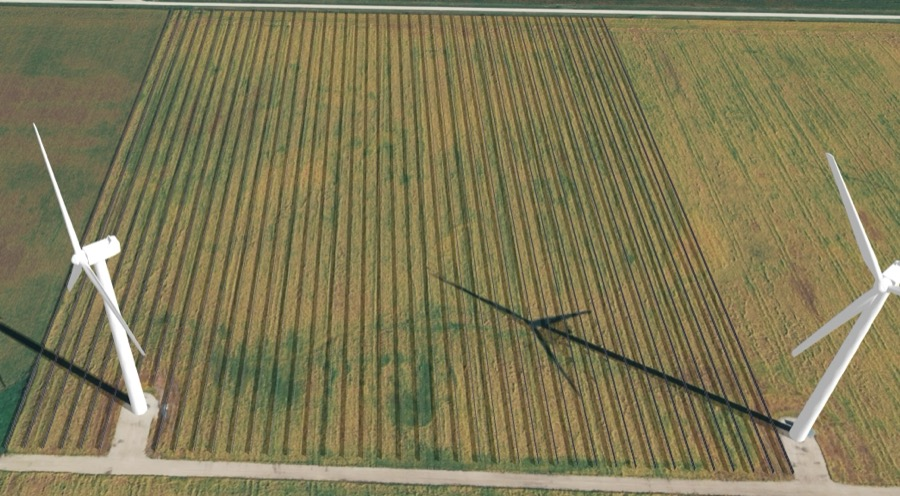

Indépendance
Libres de nos choix, indépendants des appareils partisans.
Angers au Cœur est un mouvement politique indépendant. Notre méthode : penser les enjeux à l'échelle nationale, les documenter à partir des territoires et éprouver les solutions dans la réalité locale.
Libres de nos choix, indépendants des appareils partisans.
Conserver ce qui fonctionne, réparer ce qui échoue, construire ce qui manque.
Documenter les enjeux à partir des réalités locales et des habitants.
Mettre les compétences et la participation au service de l'intérêt général.




Votre soutien et votre engagement font la différence.